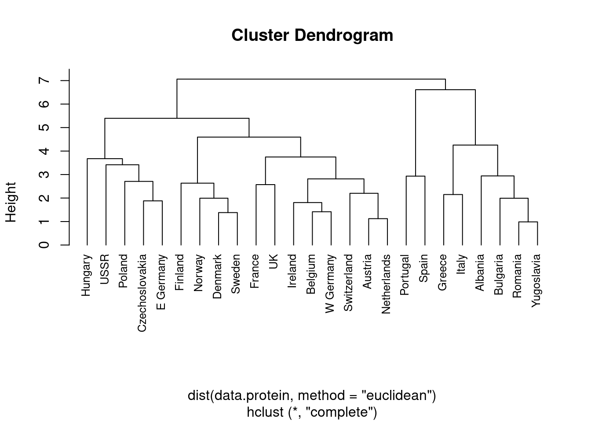
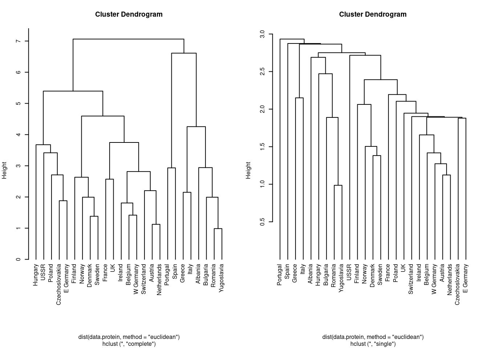
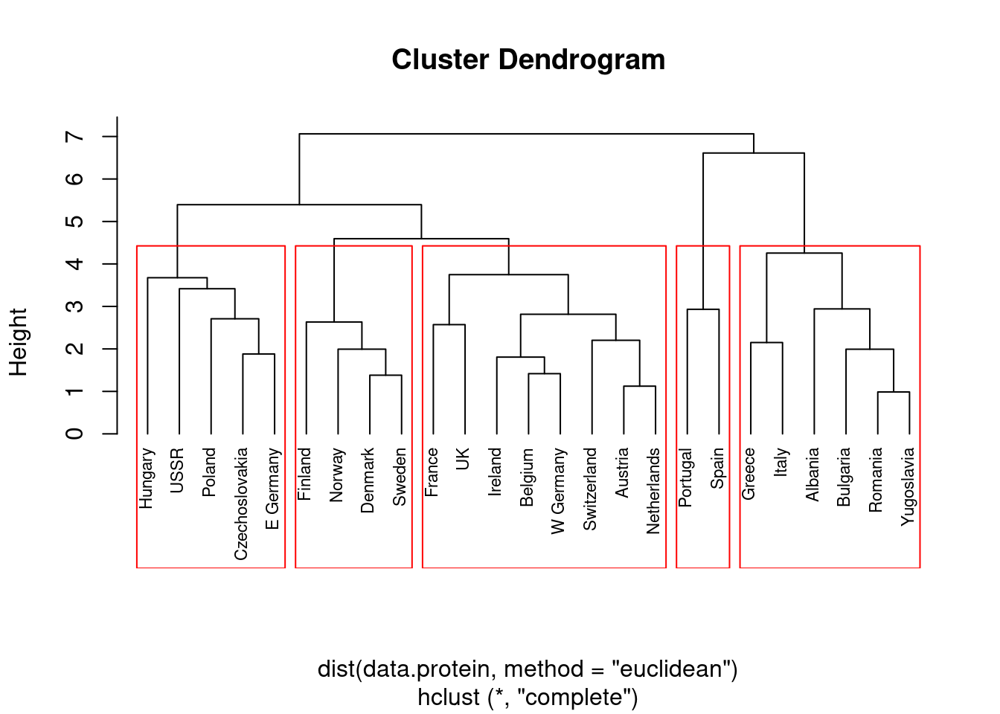
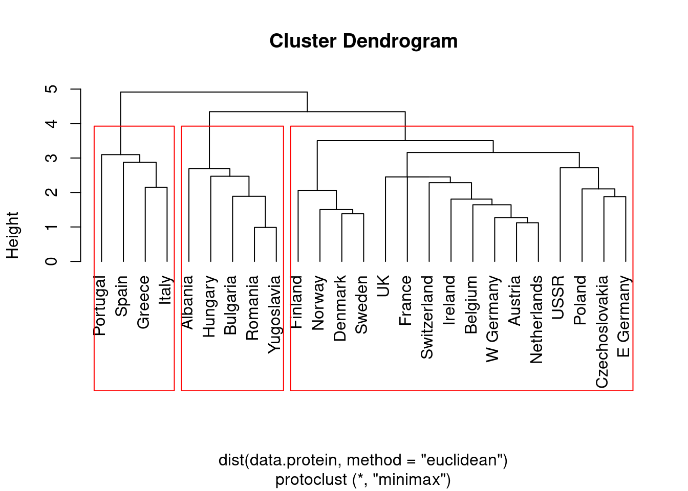
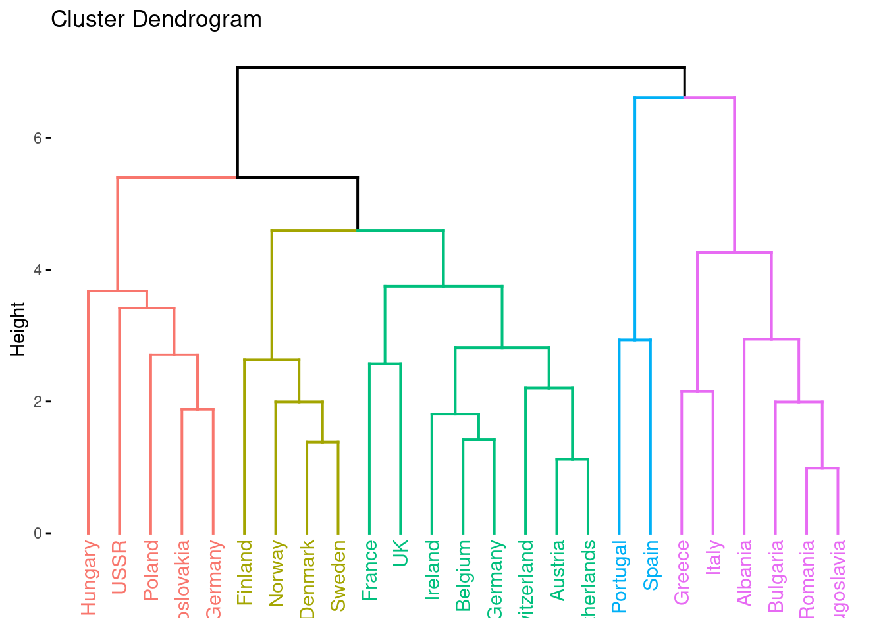
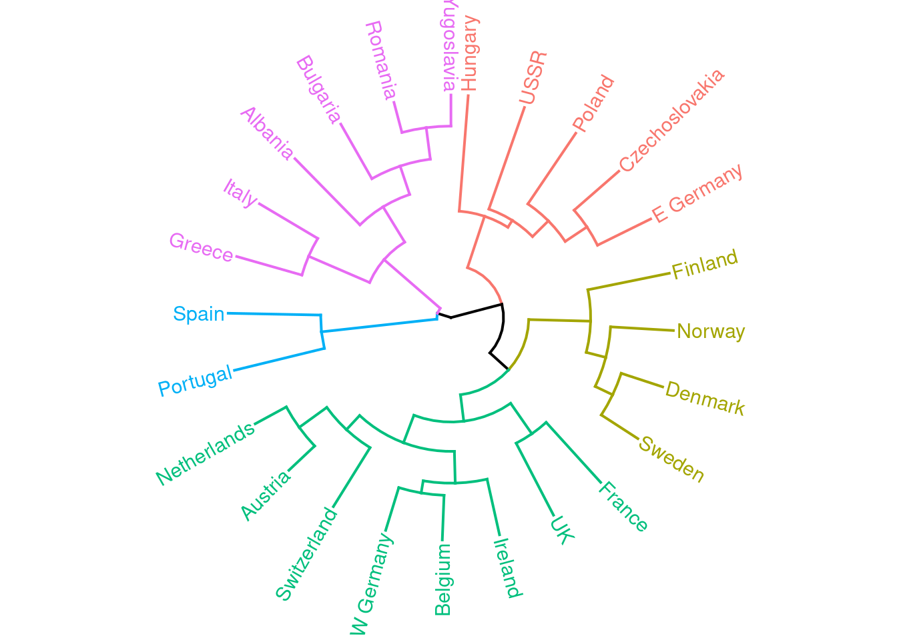

Capítulo 2 Clústers jerárquicos
2.1 hclust
Para crear un cluster jerarquico aglomerativo utilizaremos la función hclust del paquete básico stats. La sintaxis de esta función es hclust(d, method), donde d es una matriz de distancias entre las observaciones y method ( función linkage) describe el criterio que usaremos para unir distintos clusters.
Para calcular la matriz de distancias d podemos usar la función dist, en este caso, dist(data.protein, method = "euclidean"), donde el parámetro method describe qué distancia estamos calculando. Esta no es la única función que podemos utilizar para calcular distancias. Por ejemplo, si nuestros datos son geográficos (longitud, latitud), usaríamos la función distm del paquete geosphere.
##
## Call:
## hclust(d = dist(data.protein, method = "euclidean"), method = "complete")
##
## Cluster method : complete
## Distance : euclidean
## Number of objects: 25Podemos utilizar el método plot de nuestro cluster hc, con el parámetro hang=-1, que dibuja todas las etiquetas al mismo nivel.

Lo que R ha dibujado ha sido el dendograma de hc. Este gráfico se utiliza para describir la asignación de los clusters para cada valor de Height. Cuanto más cerca del cero se juntan las observaciones, en este caso los países, más similares son en cuanto a consumo de proteínas. Para cada valor específico de Height tenemos una asignación diferente de los clusters.
2.1.1 Distancias. ¿Qué hace la función dist?
Vamos a explorar el resultado de la función dist aplicada a nuestros datos.
## [1] 6.136051 5.948761 2.764537 5.141148 6.634162 6.392250Como vemos, d es una matriz simétrica, con ceros en la diagonal, que R almacena en forma de vector, y para ahorrar espacio solamente almacena el triángulo inferior de la matriz. Si hacemos d[1] obtenemos la distancia (euclídea) entre Austria y Albania.
## [1] 6.136051## [1] 6.136051Como vemos, d[1] coincide con la distancia euclídea entre las observaciones (vectores) data.protein["Austria",] y data.protein["Albania",], calculada usando la fórmula.
Existen además otras distancias que podemos calcular usando la función dist.
## [1] 3.410862## [1] 3.410862## Albania
## Austria 15.97134## [1] 15.971342.1.2 Linkages. ¿Qué especifica el parámetro method en la función hclust?
Comparemos los dos dendogramas que se obtienen al variar el parámetro method de la función hclust.
par=par(mfrow=c(1,2), cex=0.5)
hc1 = hclust(dist(data.protein, method = "euclidean"),
method = "complete")
hc2 = hclust(dist(data.protein, method = "euclidean"),
method = "single")
plot(hc1, hang=-1)
plot(hc2, hang=-1)
Como observamos, hemos obtenido dendogramas muy diferentes al cambiar method="complete" por method = "single".
En general, una función linkage especifica una similitud ( no necesariamente una distancia en el sentido matemático ) entre dos conjuntos (clusters) de datos.
2.1.3 Los métodos cutree y rect.hclust
Independientemente de la distancia (o dis-similitud) que consideremos entre las observaciones, y el método linkage para agrupar, usualmente el objetivo que perseguimos al hacer clúster jerárquico es reportar posibles grupos latentes en las observaciones. Sin embargo, hasta ahora hemos visto cómo obtener un dendogram, pero no cómo decidir qué grupos considerar.
La función cutree del paquete básico stats realiza un corte horizontal del dendograma. Podemos proporcionar uno de los dos, un número fijo de grupos mediante el parámetro k, o una altura en la cual cortar con el parámetro h.
## Albania Austria Belgium Bulgaria Czechoslovakia
## 1 2 2 1 2
## Denmark E Germany Finland France Greece
## 2 2 2 2 1
## Hungary Ireland Italy Netherlands Norway
## 2 2 1 2 2
## Poland Portugal Romania Spain Sweden
## 2 3 1 3 2
## Switzerland UK USSR W Germany Yugoslavia
## 2 2 2 2 1La función cutree retorna un vector de tipo Named int de longitud es número de observaciones, con los índices de pertenencia a los grupos. Podemos utilizar esta información para trabajar con los diferentes grupos.
cut = cutree(hc1, k=5)
for (i in 1:5) {
write(paste0("Cluster ",i,":\n",
toString(names(which(cut==i))),
"\n-----------------\n"), "")}## Cluster 1:
## Albania, Bulgaria, Greece, Italy, Romania, Yugoslavia
## -----------------
##
## Cluster 2:
## Austria, Belgium, France, Ireland, Netherlands, Switzerland, UK, W Germany
## -----------------
##
## Cluster 3:
## Czechoslovakia, E Germany, Hungary, Poland, USSR
## -----------------
##
## Cluster 4:
## Denmark, Finland, Norway, Sweden
## -----------------
##
## Cluster 5:
## Portugal, Spain
## -----------------Otra función que puede ser muy útil para representar la agrupación obtenida es rect.hclust, también del paquete base stats.

2.2 Librería protoclust
Recientemente, Bien and Tibshirani (2011) han introducido un nuevo tipo de linkage, el minimax linkage. Este tiene la propiedad de que para un corte a altura h, cualquier punto está a distancia menor que h del centro de su cluster.
Para utilizar el linkage minimax, debemos instalar el paquete protoclust
La función protoclust retorna un objeto similar a la salida de hclust.
pc = protoclust(dist(data.protein, method = "euclidean"))
plot(pc, hang = -1, cex=0.7)
rect.hclust(pc, k=3)
Podemos visualizar los dendrogramas con factoextra.
library(factoextra)
res <- hcut(data.protein, hc_func = "hclust",
hc_method = "complete", k = 5)
fviz_dend(res)

References
Bien, Jacob, and Robert Tibshirani. 2011. “Hierarchical Clustering with Prototypes via Minimax Linkage.” Journal of the American Statistical Association 106 (495): 1075–84.